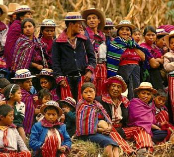

Huehuetenango es uno de los departamentos de Guatemala donde se practican varios idiomas mayas, sin dejar de predominar el español. (Idioma oficial)
Entre otros idiomas hablados en la región se encuentra: el mam que se habla en los municipios de La Libertad, San Pedro Necta, Santiago Chimaltenango, Todos Santos Cuchumatán, Cuilco, San Ildefonso Ixtahuacán, Colotenango, San Rafael Petzal, San Juan Atitán, San Gaspar Ixchil, Santa Bárbara, San Sebastián Huehuetenango, Chiantla y Tectitán; compartiendo su uso con el tectiteco, que se habla en Cuilco y Tectitán, con el acateco en San Miguel Acatán, el cual también se habla en San Rafael la Independencia. El chuj se habla en San Mateo Ixtatán, San Sebastián Coatán y parte de Nentón, en donde comparte con el poptí. Este último, que también es conocido como jacalteco, se habla en Jacaltenango, La Democracia, Concepción, San Antonio Huista, Santa Ana Huista y Santiago Petatán. El kanjobal se habla en San Pedro Soloma, San Juan Ixcoy, Santa Eulalia y Santa Cruz Barillas. El aguacateco que se habla en parte de Aguacatán donde también se habla el chalchiteco.
